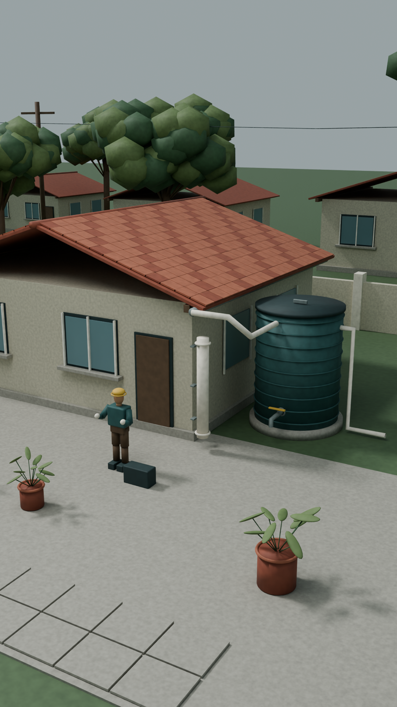
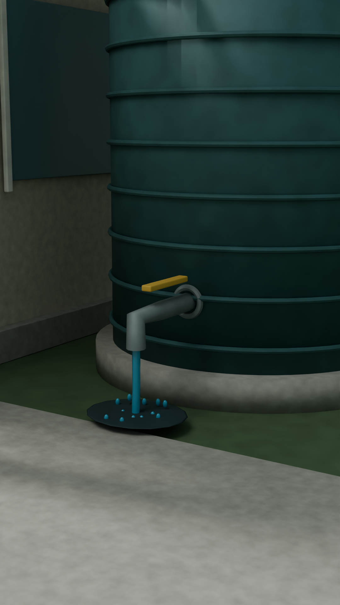
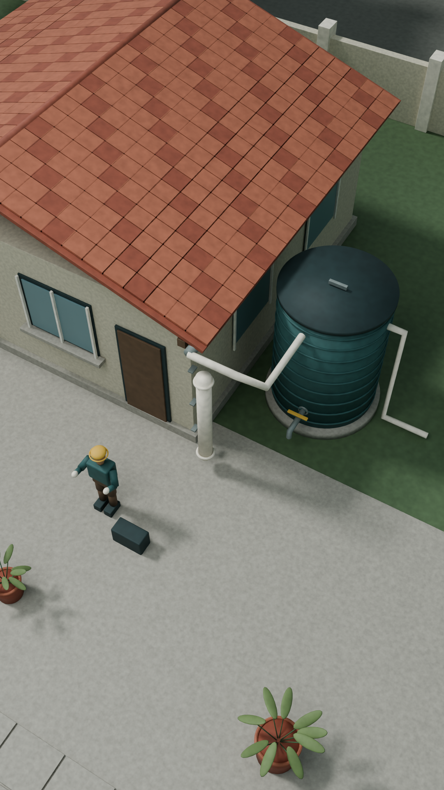
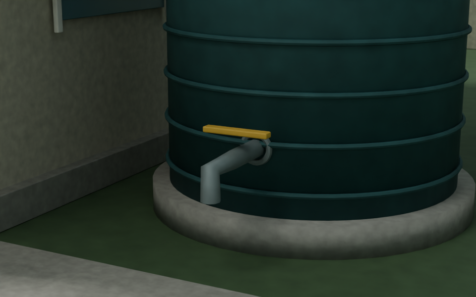
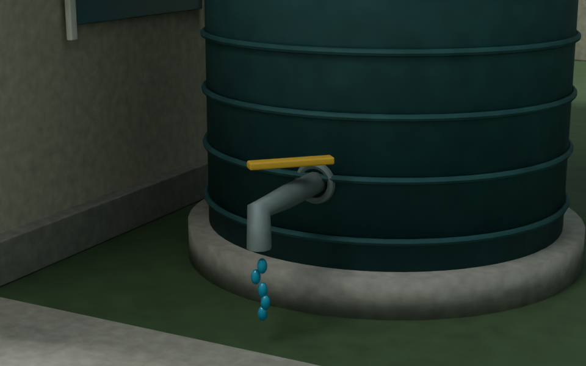
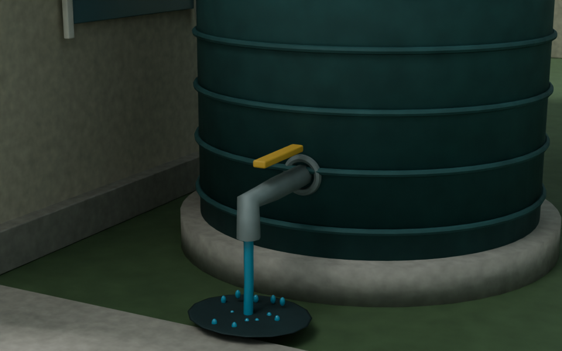

BONGKAR
SISTEM /02
Dunia penuh.
Aksinya terasa.
Skala lebih nyata. Step lebih rapat. Kamera masuk ke aksi, lalu mengikuti akibatnya.
Masuk ke lingkungannya.
3 STUDI INDEPENDEN / BUKAN URUTAN EPISODE
Mulai dari
tempatnya.
Lingkungannya berlanjut.
Bangunan, halaman, tetangga, material, dan kedalaman mengisi layar. Kamera berada di dalam tempat ini.

Putar.
Lihat akibatnya.
Perubahannya terbaca.
Mendekat ke target. Baca putaran, kontak, dan hasilnya. SFX mengunci perhatian pada kejadian yang sama.

Mundur.
Lihat hubungannya.
Sudut berubah karena perlu.
Detail terhubung kembali ke sistem utuh. Posisi, arah, dan keadaan komponen tetap berkesinambungan.
Sebelum → aksi → hasil. Ketiganya harus kelihatan.
POSE STATIS / BUKAN BUKTI ANIMASI
01 / Kenali keadaan awal.
Target sudah jelas sebelum bergerak.
SFX: ruang untuk antisipasi
02 / Tunjukkan aksinya.
Putaran terbaca; respons mulai muncul.
SFX: gerak / kontak yang sesuai
03 / Beri waktu untuk hasil.
Akibatnya terlihat dan tetap tersimpan.
SFX: aliran → percikan lokalStudi staging ilustratif. Posisi handle dan aliran bukan spesifikasi valve nyata. Geometri, hubungan operasi, serta cue harus disesuaikan dengan implementasi yang diteliti pada produksi.
Lebih material.
Lebih proporsional.
Tekstur, tepi konstruksi, ukuran manusia dewasa, perspektif. Identitas kuning/teal tetap ada, dengan warna yang lebih natural.
Bergerak di shot.
Bukan hanya cut.
Dolly in/out, tracking, perubahan elevasi dan angle, zoom yang beralasan. Kontak penting mendapat jeda yang terbaca.
Aksi punya bunyi.
Hujan hanya ambience.
Gerak, kontak, dan akibat diberi cue sesuai kejadian. Narasi tetap jelas; BGM opsional. Verifikasi di hasil ekspor.
90 detik.
Progres lebih rapat.
Target tetap. Step yang bertambah.
Durasi selalu di atas 60 detik.
20-26 step bermakna.
Patokan awal untuk 90 detik. Mayoritas 2,5-4,5 detik, dengan insert cepat dan hold penting.
Komedi tetap ikut alur.
Prematur merasa beres → kejadian kecil → solusi berikutnya. Callback jika mendukung cerita.
Natural pada tempat dan material.
Material menerima cahaya; nilai hex adalah input. Hindari warna permen dan bevel berlebihan.
Teks pendek, aksinya dominan.
Barlow 400 / 700 / 900 / IBM Plex Mono 400.
Caption 58 px pada 1080 x 1920, backing cream/ink.